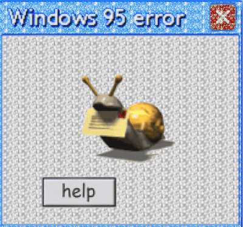

Oi meu nome é Fran :D , tenho 14 anos tenho 47 anos (Teria se estivesse viva ;-;),
morri aos 13 em Cascavel-PR. Eu andava de bicicleta Quando não pude desviar de um arame farpado :( O pior foi que o dono do lote não quis me ajudar,
riu bastante mim após agonizar por 2 horas enroscada no arame eu faleci, através dessa mensagem eu peço que façam com que eu possa descançar em paz.
Envie isso para 20 comunidades e minha alma estara sendo salva por você e pelos outros 20 que receberão.
Caso não repasse essa mensagem vou visitar-lhe hoje a noite assim vc poderá conhecer o tal arame bem de pertinho. Dia 15 de Julho Mariana resolveu rir dessa mensagem,
uma noite depois ela sumiu sem deixar vestigios. O mesmo aconteceu com Guilherme dia 28 de Agosto.
Não Quebre essa corrente por favor, a não ser que queira sentir a minha presença.

PARABÉNS
Muito Feliz anivérsario mais um ano existindo nesse mundo maluco doido pirado e ainda assim vivendo coisas muito maneiras como esse momento único pelo qual você se encontra nesse exato e absolutamente talvez meio me perdi, MUIT O FELIZ ANIVERSÁRIO :DDDDDDDDDDDDDDDDDDDD
mas tem uma coisa que está muito errada...

[ . . . ]
AH SIM, NÃO É UM ANIVERSÁRIO SEM MÚSICA DE ANIVERSÁRIO
(poxa era tão óbvio pfffffff....)
eu não vou estilizar esses dois parágrafos nem ferrando, vai ficar assim mesmo
Enfim, Compus uma linda melodia para seu aniver´sario, espero que goste, eu particularmente achei que ela ficou
INCRÍVEL
Vou deixar o vídeo que gravei dela aqui , a letra é muito linda e profunda, extremamente sentimental...